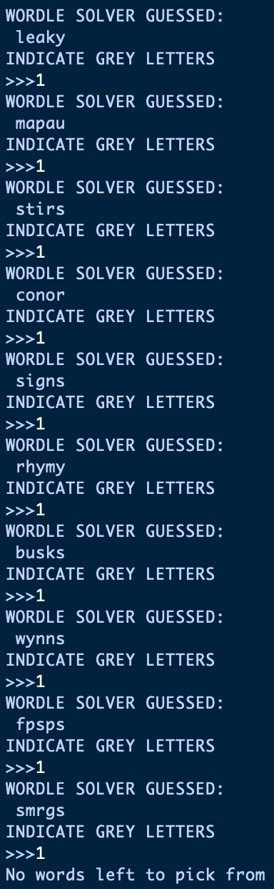

Solving Wordle in Python using set theory.

Wordle was the big thing in early 2022, and my parents introduced it to me with the idea that I could use my recently-aquired and rudimentary knowledge of artificial intelligence programming to solve it. It seemed like a much simpler problem than that to me; given the Mastermind-style feedback a player gets with each guess, one can eliminate a hefty number of words from the pool of candidate answers each time, and should get down to a final guess fairly quickly. Plus, I was/am not very good at artificial intelligence coding.
First thing's first- we need a list of possible words to start off with. I acquired this fairly easily by typing 'dictionary.txt' into Google, and getting this helpfully provided website. In accordance with Wordle's rules, I chose the words_alpha.txt file, which omits all words containing non-alphabetic characters (i.e. numbers and symbols). In accordance with my simple knowledge of Python, I chose not to download and use the .json file, as I never learned how to use Python dictionaries. At some point, I think I shall revisit this programme and use a dictionary for data handling- should be quicker, and is definitely better practice.
words_alpha.txt contains words of all lengths, so my programme's first step when running is to read in the file, split it into a list, and eliminate all words which aren't five characters long.
Wordle pretty much tells us what we need to do to our list of words, given some guess. If a letter's grey, it's not in the word- all words containing that letter can be removed from our word list. If a letter's green, it's in the word at that exact position- all words which don't contain that letter at that position can be removed. If a letter's orange, it's in the word, but not at that position- we can remove all words which don't contain that letter, and all words which contain that letter in that position. I implemented these rules, plus - because the word list we're working from is more extensive than Wordle's - a 'nope' function, which removes specific words if they're entered as guesses and Wordle doesn't recognise them.
Simple CLI, although this one might be fun to do as a GUI at some point. Running the programme starts a while loop which spits out a guess, and the number of words left to choose from. Simply type the programme's guess into Wordle, observe the pretty colours, and feed them back into the programme by entering 'g' for green, 'o' for orange, 'e' for grey (that is, for 'eliminate') or 'nope' if Wordle doesn't recognise the word. As an example, if the programme guessed 'house' and Wordle returned house, you'd then type 'goeeg' into the programme, press enter, and get a new guess. This is a little clunky, but does the job. A GUI could have a lookalike window showing the programme's guess, and the colours of each box could be settable via repeated clicking, with a 'guess again' button to the side once the data had been entered.
I played twenty five games of Wordle Unlimited to test out the solver:
Warning headphone users: weird sped-up keyboard clicking sounds abound
For such a basic solution, it does pretty well. It rarely ever fails to guess the correct word, although it comes down to luck sometimes, for example in situations where there are lots of possible words that differ only by one letter. While intelligent solvers such as humans and AI programmes will guess words which are more commonly used, my programme has no word frequency weighting and is just as likely to go for an obscure word as a common one, meaning it'll just work it's way through a list of similar words, running the risk of picking the wrong one enough times to fail the game.
A further problem is the number of non-recognised guesses my solver gives. Obviously it would be silly to go through the word list text file and manually delete the obscure words- instead, the 'nope' command could remove the specified word not only from the runtime list, but also the text file itself... I'll save that for whenever I decide to add a GUI.
The latest version can be downloaded here.